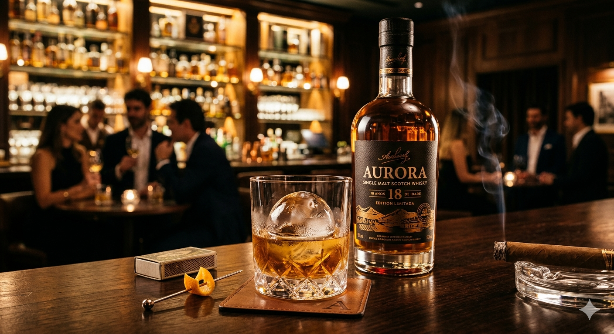
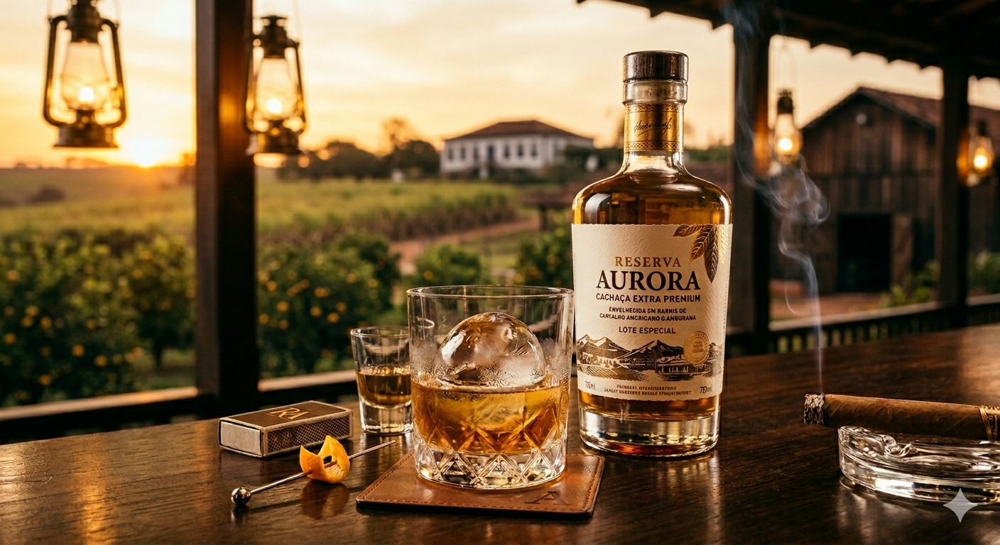
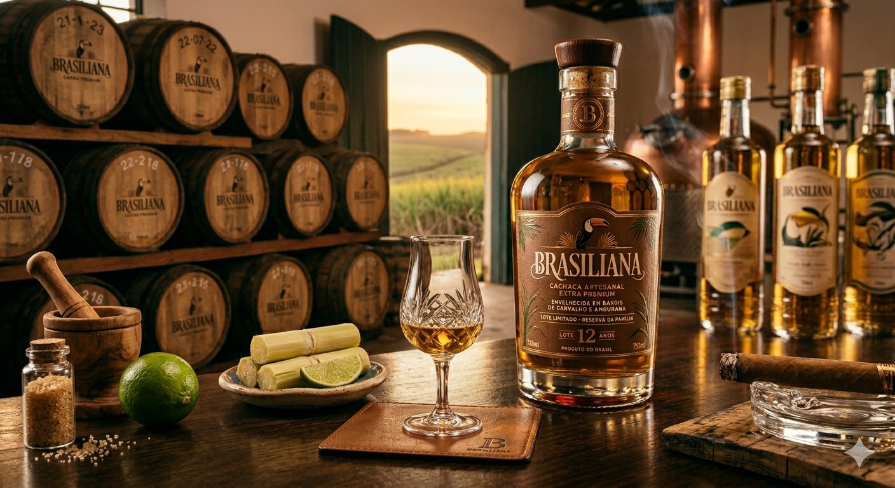

Whisky, Pinga e Cachaça
Conheça a origem e evolução de bebidas que marcaram culturas ao redor do mundo.

O whisky surgiu durante a Idade Média, principalmente na Escócia e na Irlanda. Sua criação é atribuída a monges que dominavam técnicas de destilação.
Inicialmente usado como medicamento, o whisky evoluiu ao longo dos séculos e passou a ser envelhecido em barris de madeira, o que lhe confere sabor e aroma característicos.
Hoje, é uma das bebidas mais apreciadas do mundo, com diversas variações como Scotch, Bourbon e Irish whiskey.

A "pinga" é um termo popular brasileiro usado para se referir à cachaça ou outras bebidas alcoólicas fortes.
Sua origem está ligada ao período colonial, quando escravizados e trabalhadores dos engenhos consumiam o líquido fermentado da cana-de-açúcar.
O nome “pinga” pode ter surgido das gotas que escorriam dos alambiques durante o processo de destilação.

A cachaça é uma bebida genuinamente brasileira, produzida desde o século XVI a partir da fermentação e destilação do caldo de cana-de-açúcar.
Durante o período colonial, tornou-se popular entre escravizados e posteriormente entre todas as camadas da população.
Hoje, é reconhecida internacionalmente e é o principal ingrediente da famosa caipirinha, símbolo do Brasil.